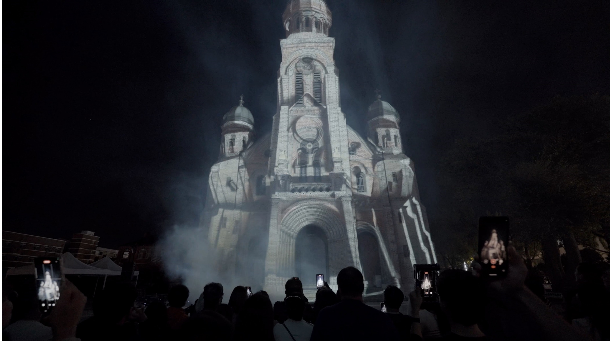
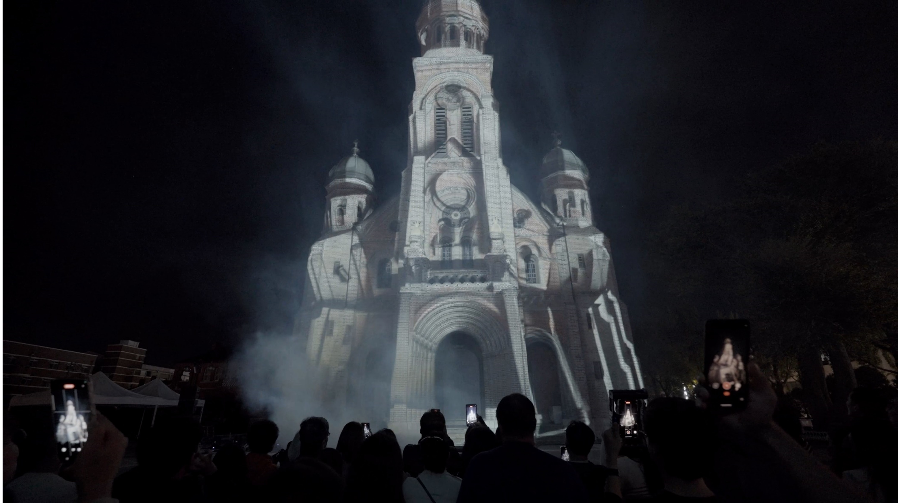

Cycle
점선면선점 (Dot, Line, Plane, Line, Point)
- Art Director: 유환 (YOUHWAN)
- Media artist : 유환 (YOUHWAN) & 김동한
- Art production company: Aplan company
- Venue: Jeonju Jeondong Catholic Cathedral
점선면선점 (Dot, Line, Plane, Line, Point)
빛, 소리, 색, 형태의 시작은 어디이고 끝은 어디인가? 점,선,면의
불완전은 무엇이고 완전은 무엇인가? 우리는 종착지를 향함과 동시에
새로운 시작점을 항상 넘어가며 살고있다. 시작으로 보이는 곳 조차 과정이
존재하며, 과정 또한 시작이다.
점선면선점은 시작과 과정, 그리고 그 끝에서 다시 시작되는 순환의
이야기를 탐구하는 오디오 비주얼 작품입니다. 이 작품은 '점, 선,
면'이라는 기본적인 형태를 통해, 우리가 끊임없이 새로운 출발점에 서고
다시 그 끝에 도달하는 과정을 시각적으로 표현합니다. 빛과 소리, 색과
형태는 그 자체로 시작과 끝을 지니고 있으며, 이들은 공간 안에서 선과
면으로 변형되며 우리에게 다양한 이야기를 전합니다. 시작점이 끝점에
닿아 선을 이루고, 출발선이 결승선에 닿아 면을 만들어내는 순환의 과정
속에서 우리는 끊임없이 앞으로 나아갑니다.
Where do light, sound, color, and form begin, and where do they end?
What is the imperfection of points, lines, and surfaces, and what is
perfection? We live by always surpassing new starting points while
heading toward our destination. Even what appears to be a beginning
holds a process, and that process itself is a new beginning.
"Point Line Surface, Line Point" is an audio-visual work that explores
the cyclical narrative of beginnings, processes, and ends that lead to
new beginnings. Through the basic forms of "point, line, and surface,"
this piece visually represents the continuous process of standing at a
new starting point and reaching the end, only to start again. Light,
sound, color, and form inherently carry both beginnings and ends. They
transform into lines and surfaces within space, conveying various
stories to us. The starting point touches the end point to form a
line, and the starting line touches the finish line to create a
surface. In this cyclical process, we are constantly moving forward.
 
